This project is dedicated to analyzing the drivers of inflation in the United States and attempting to create a forecasting model that can predict whether inflation will rise or fall. The study uses a monthly set of macroeconomic data from 1958–2024 from FRED, BLS, BEA, EIA, and the U.S. Treasury Department. The study includes measures of consumer prices, labor markets, GDP growth, energy markets, external balances, interest rates, yield curve spreads, and inflation expectations.
The analysis begins with the Phillips curve model, which was widely accepted from the late 1950s to the early 1970s as the primary tool for explaining and forecasting inflation. The study’s findings show that in modern economies, unemployment currently explains little of the variation in inflation, suggesting that the drivers of the economy have changed. We added variables for energy shocks, global linkages, and monetary policy to the simulation. Using a linear model, we identified five key predictors of inflation: changes in oil prices, natural gas prices, GDP growth, and short- and long-term inflation dynamics. To complement this structural approach, a Vector Autoregression (VAR) model was also estimated to capture the dynamic interactions among macroeconomic variables and to examine how shocks propagate across the economic system.
We also developed models for forecasting the economy. Comparing the results of the models, we found that SARIMAX was the best. We also tested the robustness of the model through horizon-based cross-validation. The final model produces inflation forecasts for the next two years. We also developed a model that signals recession warnings. Together, these results provide insight into the drivers of the economy and inflation dynamics in the United States.
Inflation remains one of the most persistent and difficult-to-explain macroeconomic phenomena. Although classical economic theory links inflation to a decline in the labor market, this connection has weakened significantly in recent decades. Therefore, current research relies on a handful of other driving forces that stimulate a sharp increase in inflation. Analysis of inflation peaks shows that the reasons for the rapid increase are the recovery of oil prices, trade disruptions, the pandemic and aggressive monetary policy. Therefore, we decided to add domestic, global and financial market forces to the predictor variables.
For the study, a monthly data set for 1958–2024 was taken from the main US macroeconomic institutions, such as FRED, BLS, BEA, EIA, and the Treasury Department. The data set includes: consumer prices, employment trends, GDP growth, commodity markets, external balances, interest rates, the yield curve, and inflation expectations.
A linear regression model was developed to determine the relationships between variables and inflation. Five variables were selected using subset selection. As a result, the most influential variables were oil and natural gas prices, with GDP growth and short-term inflation persistence as the main factors. To complement this static analysis, a Vector Autoregression (VAR) model was also estimated to capture dynamic interactions among inflation, labor markets, interest rates, and energy prices. Unlike the linear model, VAR incorporates lag structures directly and allows the system of variables to influence each other over time. However, the VAR model is less interpretable than the linear model, because the linear model focuses on the structural contribution of each predictor in an easy-to-explain way (for example: a 1% rise in oil prices increases inflation by …). While VAR provides a representation of how shocks propagate through the economy. Its value comes from modeling how changes in one variable influence others over multiple periods.
In addition to these structural analyses, the project also develops a more advanced time series forecasting framework using SARIMAX models. Since inflation exhibits persistence, volatility clustering, and potential structural disruptions, some preliminary training is required. The target variable is defined as the logarithmic annual change in the core CPI, whose differential form is shown to be stationary by ADF and KPSS testing. A systematic grid search is performed for seasonal and non-seasonal SARIMA parameters, followed by a multi-stage variable screening process to identify significant exogenous predictors. Seven macroeconomic variables, including the unemployment gap, gasoline prices, expected inflation, the federal funds rate, and the 10-year–3-month bond yield spread, are tested for stationarity and included in either differential or level form, as appropriate.
The model is evaluated against statistical criteria such as coefficient significance, residual whiteness using the Lung-Box test, valid standard errors, and savings. We also use the mean absolute scaled error (MASE) and Theil’s U-statistic as performance measures. A 108-fold expanding window validation is used to assess robustness over forecast horizons of one to twelve months. After filtering over eight million candidate specifications, the model selected for final forecasting is the SARIMA(1,1,1)(0,0,2)[12] structure, augmented with a three-month lag differential federal funds rate. Performance deteriorates somewhat as forecast horizons increase. Nevertheless, the model provides a reliable short-term forecast and is used to generate inflation forecasts for the next two years.
Along with SARIMAX, the VAR model is used to assess the behavior of inflation forecasts in a multivariate environment. Although its within-sample forecasting accuracy is lower in the short term, the model is more stable for medium- and long-term forecasts. VAR also explains how shocks propagate across variables, making it valuable for understanding the mechanisms of the economy.
Finally, the project extends the analysis by building a recession warning model based on yield curve signals and macro-financial indicators, offering an integrated view of economic risks.
This work combines structural economic analysis with time series modeling using the SARIMA model and dynamic multivariate modeling through VAR to provide insight into the dynamics of inflation in the United States. Using macroeconomic variables, the project identifies factors that influence inflation and provides a model that predicts inflation for the next two years with reasonable accuracy.
Dataset file: economic_combined_data.csv
This dataset integrates a comprehensive set of U.S. macroeconomic indicators used to analyze the joint dynamics of inflation, labor market conditions, wages, interest rates, trade flows, and commodity prices. All variables are observed at a monthly frequency and are primarily sourced from FRED (Federal Reserve Economic Data) and the Bureau of Labor Statistics (BLS). In addition to directly imported series, several variables are constructed as growth rates, percentage changes, or logarithmic transformations to support econometric modeling and time-series analysis.
Sample period: February 1957 – September 2025
| Variable | Description | Source | Unit |
|---|---|---|---|
date |
Monthly observation date used as the time index | — | YYYY-MM-DD |
cpi |
Consumer Price Index (All Urban Consumers, All Items) | FRED (CPIAUCSL) |
Index (1982–1984 = 100) |
core_cpi |
Core CPI excluding food and energy | FRED (CPILFESL) |
Index (1982–1984 = 100) |
cpi_energy |
Energy component of CPI | BLS (CUUR0000SA0E) |
Index |
cpi_food_beverages |
Food and beverages CPI component | BLS (CUUR0000SAF) |
Index |
cpi_housing |
Housing CPI component | BLS (CUUR0000SAH) |
Index |
cpi_medical |
Medical care CPI component | BLS (CUUR0000SAM) |
Index |
cpi_transportation |
Transportation CPI component | BLS (CUUR0000SAT) |
Index |
inflation_rate |
Month-over-month CPI inflation rate | Derived | Percent (%) |
core_inflation_rate |
Month-over-month core inflation rate | Derived | Percent (%) |
inflation_yoy |
Year-over-year CPI inflation rate | Derived | Percent (%) |
core_inflation_yoy |
Year-over-year core CPI inflation rate | Derived | Percent (%) |
log_inflation_mom |
Log month-over-month core inflation | Derived | Percent (%) |
log_inflation_yoy |
Log year-over-year core inflation | Derived | Percent (%) |
unemployment_rate |
Civilian unemployment rate | BLS (LNS14000000) |
Percent (%) |
unemp_noncyclical |
Natural rate of unemployment (NROU) | FRED (NROU) |
Percent (%) |
unemp_24_54_yrs |
Unemployment rate, ages 24–54 | FRED (LNS14000060) |
Percent (%) |
unemp_gap |
Difference between actual and natural unemployment | Derived | Percent (%) |
avg_hourly_earnings_all |
Average hourly earnings (private sector) | BLS (CES0500000008) |
USD/hour |
fed_funds_rate |
Effective Federal Funds Rate | FRED (FEDFUNDS) |
Percent (%) |
expected_inflation_1y |
One-year-ahead inflation expectations | SPF | Percent (%) |
brent_oil_usd |
Brent crude oil benchmark price | FRED / Kaggle | USD/barrel |
natural_gas_usd |
Natural gas benchmark price | Kaggle | USD/MMBtu |
treasury_10y |
10-Year Treasury constant maturity yield | FRED (DGS10) |
Percent (%) |
treasury_6m |
6-Month Treasury bill yield | FRED (DTB6) |
Percent (%) |
is_recession |
NBER recession indicator | FRED (USREC) |
Binary (0/1) |
Export_Total |
Total U.S. exports | Census Bureau | USD |
Import_Total |
Total U.S. imports | Census Bureau | USD |
Trade_Balance |
Exports minus imports | Derived | USD |
GDPC1 |
Real GDP (chained 2017 dollars) | FRED (GDPC1) |
Billions USD |
RealGDPGrowth |
Growth rate of real GDP | Derived | Percent (%) |
DTWEXBGS |
Trade-weighted U.S. dollar index | FRED (DTWEXBGS) |
Index |
gasoline |
U.S. retail gasoline price | FRED (GASREGW) |
USD/gallon |
10y_2y_spread |
Yield curve slope (10Y − 2Y) | FRED (T10Y2Y) |
Percentage points |
The dataset was created through a reproducible Python pipeline:
date using outer joins
to preserve full coverage.
Other variables were added as needed in the project
The Phillips Curve is a foundational concept in macroeconomics that describes an inverse relationship between inflation and unemployment. First introduced by A. W. Phillips in 1958, the original formulation was based on empirical evidence from the United Kingdom, showing that periods of low unemployment were typically associated with higher wage growth, while higher unemployment coincided with slower wage increases. Over time, this relationship was extended from wages to price inflation and became central to both economic theory and policy discussions.
The initial motivation of this analysis is to empirically examine whether a similar dependence between inflation and unemployment can be observed in modern U.S. macroeconomic data. The analysis aims to assess whether unemployment remains a meaningful predictor of inflation and to what extent this traditional framework aligns with observed economic behavior.
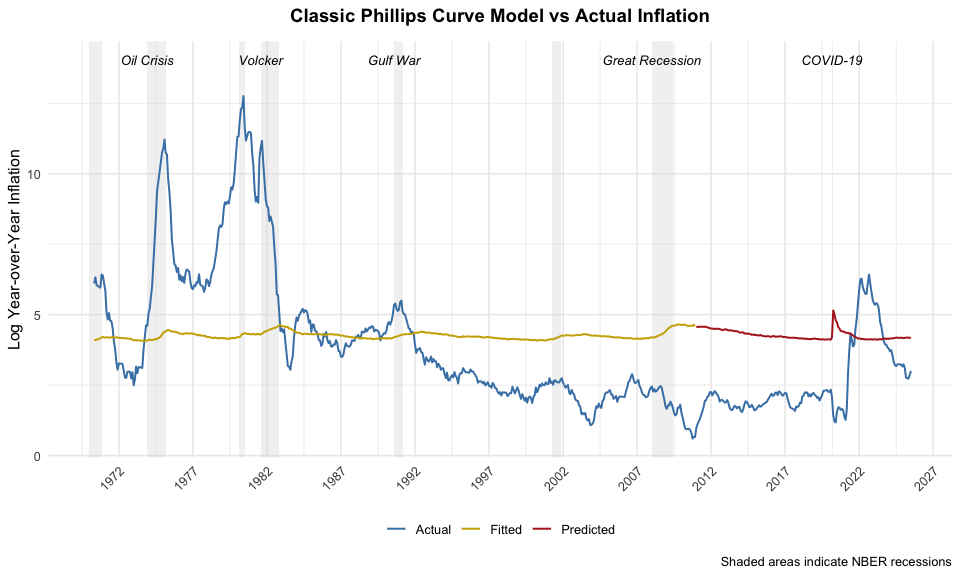
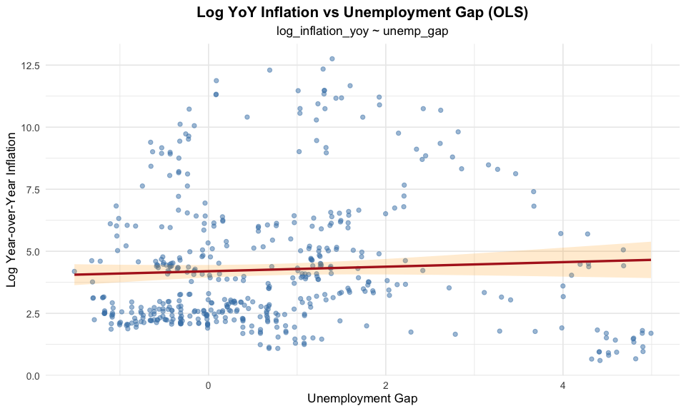
The initial empirical implementation of the classic Phillips Curve in this study was unsuccessful in capturing a meaningful relationship between inflation and labor market slack. Scatter plots of log year-over-year inflation against the unemployment gap exhibit no clear pattern, and the estimated OLS coefficient on the unemployment gap is small and statistically insignificant (p ≈ 0.26), with an R² close to zero.
This weak performance can be explained that inflation dynamics have changed substantially over time due to globalization, supply-side shocks, and improvements in monetary policy credibility. As a result, linear regression based solely on unemployment cannot capture mechanisms that drive inflation.
Modern macroeconomic research addresses these shortcomings through the Augmented Phillips Curve. This extension was developed independently by Friedman (1968) and Phelps (1967), who argued that any short-run trade-off between inflation and unemployment depends critically on whether inflation is anticipated.
The Augmented Phillips Curve extends the classical framework by incorporating inflation expectations, recognizing that workers and firms base their decisions on anticipated future price changes. This model includes expected inflation (\(\pi_{t}^{e}\)) as a key determinant and is formally expressed as:
\[\pi_{t} = \pi_{t}^{e} - \beta\left( u_{t} - u_{t}^{*} \right) + \epsilon_{t}\]
Here, \(\pi_{t}\) is the actual inflation rate, \(\pi_{t}^{e}\) represents expected inflation, \(\left( u_{t} - u_{t}^{*} \right)\) is the unemployment gap (the difference between actual and the natural rate of unemployment), and \(\beta\) measures the sensitivity of inflation to economic slack. This formulation implies that only unexpected deviations from the natural rate of unemployment (\(\beta > 0\)) affect inflation, capturing the concept of the Non-Accelerating Inflation Rate of Unemployment (NAIRU).
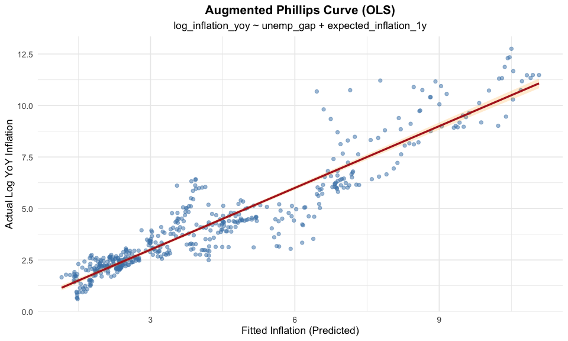
The estimated Augmented Phillips Curve model is:
\[{Inflation}_{t} = - 0.127 - 0.070{UnempGap}_{t} + 1.197{ExpectedInflation}_{t} + \epsilon_{t}\]
The results provide strong evidence for the augmented expectations-based theory but only weak support for the classic unemployment-inflation trade-off:
Expected Inflation (expected_inflation_1y): The coefficient of 1.197 is highly statistically
significant (p-value < 2.2e-16). This strong, slightly
more-than-one-for-one pass-through is the dominant driver of inflation
in this model and is a key prediction of the augmented theory.
Unemployment Gap (unemp_gap): The coefficient is -0.070, suggesting that a 1
percentage point increase in the unemployment gap (higher slack) is
associated with a 0.07 percentage point decrease in inflation. While
the negative sign aligns with Phillips Curve theory, the relationship
is statistically weak in the first table (p-value = 0.3063) but
becomes significant in the second (p-value = 0.00244). The discrepancy
in standard errors suggests potential issues with heteroskedasticity.
Economically, this small coefficient implies the trade-off is very
flat.
Model Fit: The high R-squared of 0.856 indicates that together, the unemployment gap and expected inflation explain 85.6% of the variation in inflation, confirming they are key determinants.
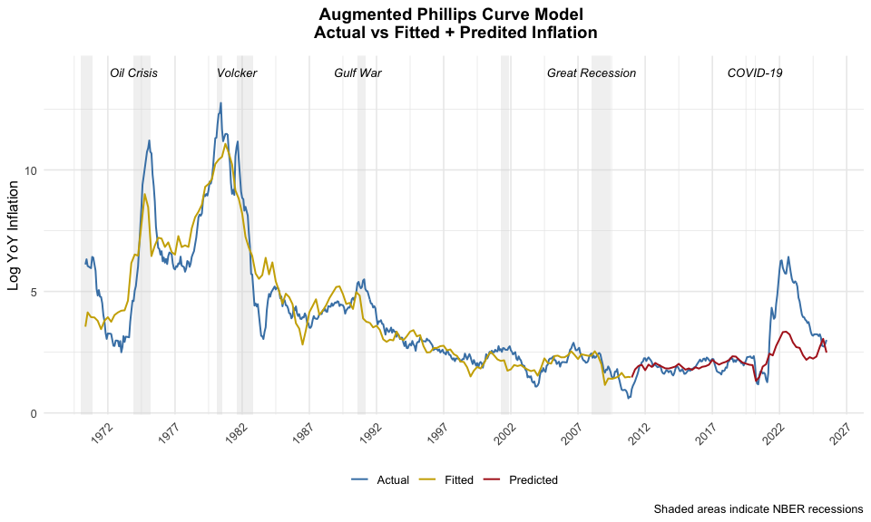
A comparison of the classical and extended Phillips curve models highlights that inflation cannot be reliably modeled using labor market conditions alone. Inflation dynamics in the real world are shaped by a broader set of forces, including supply shocks, commodity price fluctuations, interest rate policy, exchange rate fluctuations, and global demand conditions. Key historical episodes visible in the data, such as the 1970s oil crisis, Volcker disinflation, the Great Recession, and the supply disruptions caused by COVID-19, exhibit inflationary fluctuations that unemployment alone cannot explain. The project therefore decided to extend the data to include additional variables, such as energy prices, monetary policy indicators, trade balance indicators, or financial conditions. By extending the model beyond the Phillips curve, the project can better capture the multidimensional nature of inflation and improve both explanatory power and forecasting accuracy.
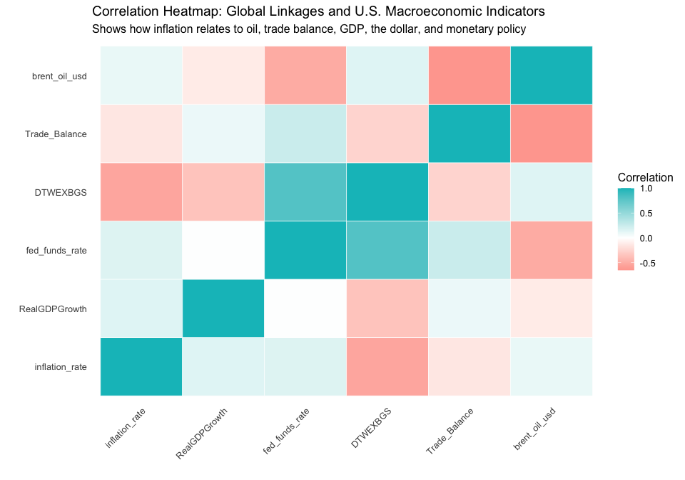
This heatmap summarizes how key global linkages interact with U.S. inflation dynamics. Inflation is positively correlated with oil prices, reflecting energy cost pass-through. GDP growth and inflation show moderate co-movement, while the Fed Funds Rate is positively related to inflation because the Federal Reserve typically raises rates during inflationary periods. The dollar index tends to move inversely with inflation: a stronger dollar reduces import prices. The trade balance shows negative correlations with domestic activity, weakening during economic expansions. These relationships highlight the external forces shaping U.S. inflation and justify focusing on oil, trade, and the dollar in the analysis.
We compute monthly real GDP growth as
\[\text{Growth}_{t} = \left( \frac{GDPC1_{t}}{GDPC1_{t - 1}} - 1 \right) \times 100.\]
Similarly, the year-over-year (YoY) real GDP growth — which compares output to the same month a year earlier — is defined as:
\[\text{Growth}_{t}^{\text{YoY}} = \left( \frac{GDPC1_{t}}{GDPC1_{t - 12}} - 1 \right) \times 100.\]
These measures reflect different time horizons: - The monthly rate captures short-term fluctuations and volatility. - The year-over-year rate smooths seasonal variation, emphasizing longer-term economic cycles.
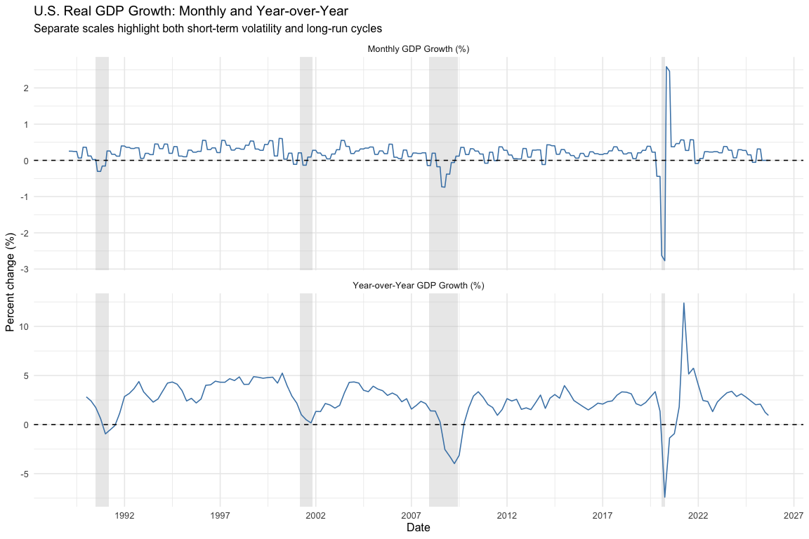
This chart shows monthly real GDP growth in the United States, computed from chained-dollar GDP (GDPC1). The series fluctuates around an average growth rate of approximately 0.25% per month, which corresponds to about 3% annualized economic growth over the long run.
Periods shaded in gray represent U.S. recessions. As expected, GDP growth typically turns negative during recessions, reflecting contractions in economic activity — notably during the 1973–75 Oil Crisis, 1981–82 Volcker Recession, 2008–09 Great Recession, and the sharp but short-lived 2020 COVID-19 downturn.
We define the trade balance as the difference between total exports and total imports:
\[\text{Trade Balance}_{t} = \text{Exports}_{t} - \text{Imports}_{t}.\]
Positive values indicate a surplus, while negative values represent a deficit.
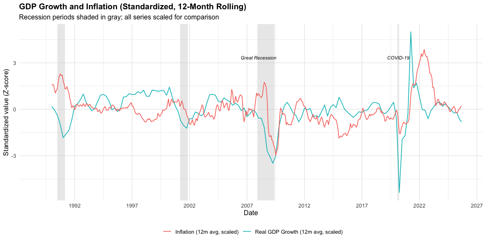
The smoothed trends show that GDP growth and inflation move together over the business cycle. Inflation (red) typically rises ahead of downturns and falls sharply during contractions. GDP growth (teal) shows the strongest cyclical swings, dropping deeply during every recession.
Next step: analyse movements in Brent oil prices and the Inflation to explore how major energy price shocks relate to inflation dynamics. The motivation is to see whether spikes in oil coincide with periods of high inflation.
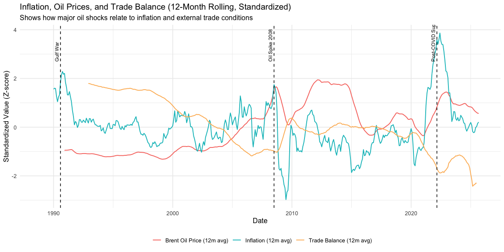
This chart compares long-run movements in oil prices, inflation, and the U.S. trade balance using standardized 12-month rolling averages. Major energy shocks—such as the Gulf War, the 2008 oil spike, and the post-COVID supply disruptions—produce visible spikes in oil prices, which are followed by rises in inflation with a slight lag. At the same time, trade balance typically deteriorates around these episodes, reflecting higher import costs and disruptions to global trade. While the three series do not move in perfect sync, the plot highlights how oil shocks ripple through the economy, raising inflation and weakening external trade conditions.
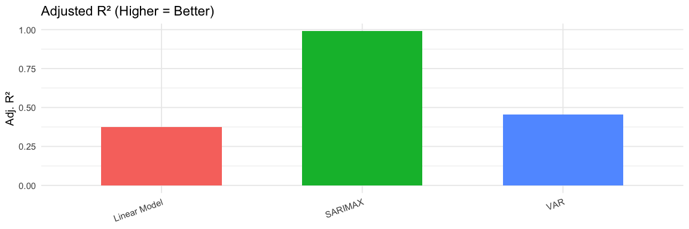
From the plot, we observe that SARIMAX achieves the highest Adjusted R² (≈0.99), indicating a strong in-sample fit for inflation. The VAR model, by contrast, achieves a much lower Adjusted R² in its inflation equation (≈0.44). This is because VAR is not designed to maximize predictive accuracy for inflation alone. Instead, it models a full multivariate economic system, jointly estimating dynamic interactions among unemployment, wages, interest rates, energy prices, and inflation itself. The linear regression model performs the weakest (≈0.38 Adjusted R²). This is largely because linear models cannot incorporate lags, autocorrelation, or dynamic feedback.
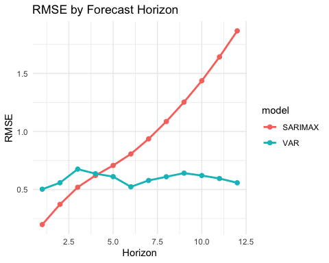
The graph shows that at short horizons (1–3 months) SARIMAX performs slightly better than VAR. However, as the horizon increases, SARIMAX exhibits a monotonic and almost linear increase in error, indicating a rapid accumulation of forecast uncertainty.
In contrast, the VAR model exhibits stable performance at all horizons. The RMSE remains in a narrow range (approximately 0.5–0.7) even at long horizons. This indicates that VAR is more successful in modeling the relationship between variables that shape inflation. Since VAR captures how inflation responds jointly to unemployment, interest rates, wages, and energy prices, it can better adapt to changes in macroeconomic conditions.
From a forecasting perspective, these results imply that SARIMAX is suitable for short-term forecasts, while VAR provides more reliable medium- and long-term forecasts.
SARIMAX remains the best-performing model for short-term inflation forecasting and for reproducing historical inflation movements. Its strengths include:
Captures autoregressive and moving-average structure. Handles seasonality. Excellent in-sample fit, because it focuses strictly on inflation’s own past behavior. Efficient for one-step-ahead forecasts, where the autoregressive structure dominates.
Advantages of the Linear Model Interpretability: Coefficients directly quantify how variables (oil, GDP, wages, rates) contribute to inflation. Detects structural relationships: Even without modeling dynamics, it highlights which predictors matter most.
Even though VAR may not achieve the same level of predictive accuracy for inflation as SARIMAX, it remains a core tool in macroeconomic analysis. Its value comes from its ability to: model prediction for all variables; vapture feedback loops, spillovers, and cross-variable interactions; maintain stable forecast performance over long horizons, support policy simulations (e.g., how an oil shock or rate hike propagates through the economy), provide insights into shock transmission and system dynamics.
This model evaluates how changes in oil prices affect monthly U.S. inflation. Using linear regression on lagged oil price growth, we find that increases in oil prices tend to raise inflation in the following month, reflecting the strong pass-through from energy costs to consumer prices.
[1] "date" "cpi"
[3] "core_cpi" "inflation_rate"
[5] "core_inflation_rate" "inflation_yoy"
[7] "core_inflation_yoy" "log_inflation_mom"
[9] "log_inflation_yoy" "expected_inflation_1y"
[11] "cpi_energy" "cpi_food_beverages"
[13] "cpi_housing" "cpi_medical"
[15] "cpi_transportation" "unemployment_rate"
[17] "avg_hourly_earnings_all" "real_wage"
[19] "real_wage_growth" "fed_funds_rate"
[21] "is_recession" "unemp_noncyclical"
[23] "unemp_24_54_yrs" "unemp_gap"
[25] "natural_gas_usd" "treasury_10y"
[27] "treasury_6m" "GDPC1"
[29] "DTWEXBGS" "brent_oil_usd"
[31] "spread_10y_3m" "spread_10y_6m"
[33] "gasoline" "trade_balance_fred"
[35] "Export_Total" "Import_Total"
[37] "Trade_Balance" "real_gdp"
[39] "RealGDPGrowth" "VIX" 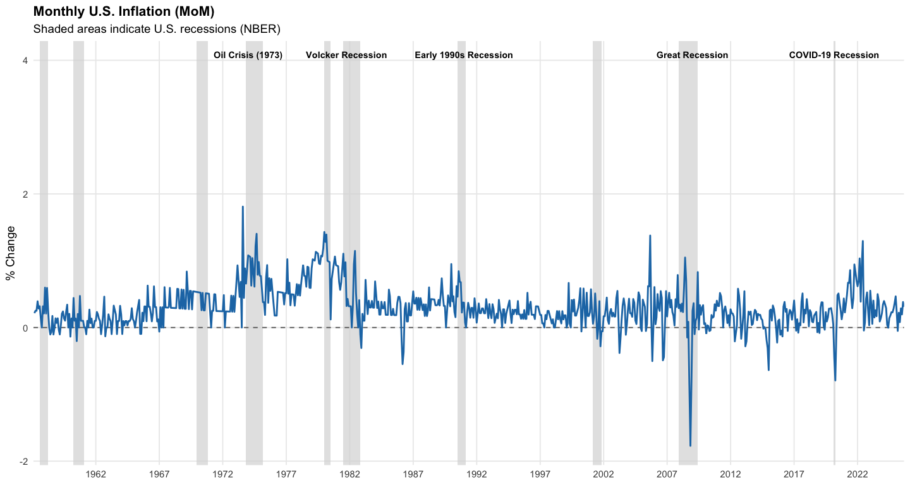
All transformed variables passed the Augmented Dickey–Fuller (ADF) test for stationarity. The p-values for inflation, oil price growth, trade balance changes, USD changes, Fed Funds Rate differences, GDP growth, unemployment differences, and expected inflation differences were all below 0.05, indicating rejection of the unit-root hypothesis. This means the series are stationary and appropriate for regression or time-series modeling.
infl_mom → best lag: 1 | corr: 0.62
oil_mom → best lag: 1 | corr: 0.494
tb_mom → best lag: 8 | corr: 0.047
usd_mom → best lag: 12 | corr: -0.312
ffr_diff → best lag: 2 | corr: 0.17
RealGDPGrowth → best lag: 8 | corr: 0.087
unemp_diff → best lag: 1 | corr: -0.037
exp_inf_diff → best lag: 2 | corr: 0.26
real_gdp → best lag: 11 | corr: -0.182
is_recession → best lag: 1 | corr: 0.063
treasury_10y → best lag: 1 | corr: 0.368
treasury_6m → best lag: 1 | corr: 0.452
spread_10y_3m → best lag: 1 | corr: -0.259
spread_10y_6m → best lag: 1 | corr: -0.258
cpi_energy → best lag: 12 | corr: -0.216
natural_gas_usd → best lag: 1 | corr: 0.125
gasoline → best lag: 12 | corr: -0.243
cpi_housing → best lag: 12 | corr: -0.379
avg_hourly_earnings_all → best lag: 12 | corr: -0.306
unemp_24_54_yrs → best lag: 1 | corr: -0.075
inflation_yoy → best lag: 1 | corr: 0.604
core_inflation_yoy → best lag: 1 | corr: 0.567
Trade_Balance → best lag: 3 | corr: -0.121
Import_Total → best lag: 1 | corr: 0.066
Export_Total → best lag: 1 | corr: 0.044
VIX → best lag: 1 | corr: -0.085Using cross-correlation analysis, I identified the most informative lags for each predictor relative to monthly inflation. Oil prices showed the strongest relationship at a 1-month lag, while the USD index had its highest correlation at a 12-month lag. Other variables, such as the Fed Funds Rate, GDP growth, trade balance, and unemployment, showed weaker lag structures.
[1] 112449184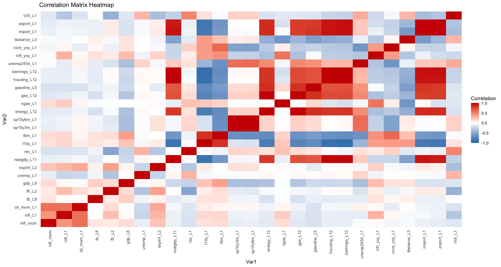
[1] "infl_mom" "infl_L1" "oil_mom_L1" "tb_L8" "ffr_L2"
[6] "gdp_L8" "unemp_L1" "expinf_L2" "rec_L1" "ngas_L1"
[11] "infl_yoy_L1" "core_yoy_L1" "VIX_L1"
Call:
lm(formula = infl_mom ~ ., data = df_reg_clean)
Residuals:
Min 1Q Median 3Q Max
-4.0960 -0.3828 0.0036 0.4306 3.1828
Coefficients:
Estimate Std. Error t value Pr(>|t|)
(Intercept) 1.433e-01 3.297e-01 0.435 0.664230
date -1.008e-05 2.296e-05 -0.439 0.661025
infl_L1 1.919e-01 6.374e-02 3.010 0.002856 **
oil_mom_L1 4.499e-01 6.108e-02 7.365 2.17e-12 ***
tb_L8 8.807e-02 4.815e-02 1.829 0.068480 .
ffr_L2 -1.001e-01 5.998e-02 -1.670 0.096148 .
gdp_L8 1.565e-01 5.274e-02 2.968 0.003268 **
unemp_L1 4.727e-02 5.177e-02 0.913 0.362095
expinf_L2 6.247e-02 5.555e-02 1.124 0.261819
rec_L1 -1.297e-01 6.644e-02 -1.951 0.052058 .
ngas_L1 2.347e-01 6.251e-02 3.755 0.000213 ***
infl_yoy_L1 -2.496e-01 6.996e-02 -3.568 0.000426 ***
core_yoy_L1 5.873e-02 5.644e-02 1.041 0.298989
VIX_L1 1.740e-02 6.743e-02 0.258 0.796590
---
Signif. codes: 0 '***' 0.001 '**' 0.01 '*' 0.05 '.' 0.1 ' ' 1
Residual standard error: 0.7855 on 269 degrees of freedom
Multiple R-squared: 0.4114, Adjusted R-squared: 0.3829
F-statistic: 14.46 on 13 and 269 DF, p-value: < 2.2e-16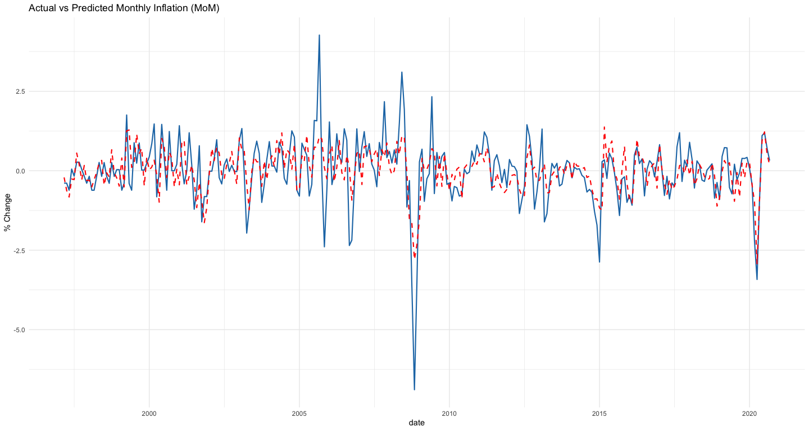
Call:
lm(formula = infl_mom ~ ., data = train)
Residuals:
Min 1Q Median 3Q Max
-4.0862 -0.4079 0.0320 0.4528 3.1780
Coefficients: (1 not defined because of singularities)
Estimate Std. Error t value Pr(>|t|)
(Intercept) 5.390e-01 5.038e-01 1.070 0.285905
date -4.142e-05 3.745e-05 -1.106 0.270035
infl_L1 2.033e-01 7.193e-02 2.827 0.005148 **
oil_mom_L1 4.457e-01 7.557e-02 5.897 1.44e-08 ***
tb_L8 8.253e-02 5.475e-02 1.507 0.133181
ffr_L2 -1.066e-01 7.115e-02 -1.498 0.135735
gdp_L8 1.556e-01 5.916e-02 2.631 0.009151 **
unemp_L1 1.884e-01 2.792e-01 0.675 0.500564
expinf_L2 7.305e-02 6.444e-02 1.134 0.258274
rec_L1 -1.274e-01 7.699e-02 -1.655 0.099495 .
ngas_L1 2.526e-01 7.534e-02 3.353 0.000946 ***
infl_yoy_L1 -2.563e-01 8.073e-02 -3.175 0.001721 **
core_yoy_L1 3.609e-02 6.707e-02 0.538 0.591027
VIX_L1 1.062e-02 7.988e-02 0.133 0.894379
pred NA NA NA NA
---
Signif. codes: 0 '***' 0.001 '**' 0.01 '*' 0.05 '.' 0.1 ' ' 1
Residual standard error: 0.8415 on 212 degrees of freedom
Multiple R-squared: 0.3914, Adjusted R-squared: 0.3541
F-statistic: 10.49 on 13 and 212 DF, p-value: < 2.2e-16
[1] 0.5044904
[1] 0.6433152
[1] 0.8150046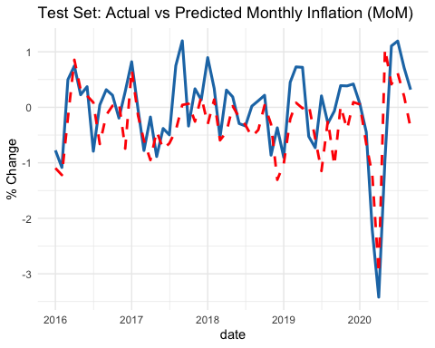
[1] "infl_L1" "oil_mom_L1" "gdp_L8" "ngas_L1" "infl_yoy_L1"
Call:
lm(formula = best_bic_formula_clean, data = df_subset)
Residuals:
Min 1Q Median 3Q Max
-4.4335 -0.4131 0.0282 0.4408 3.1438
Coefficients:
Estimate Std. Error t value Pr(>|t|)
(Intercept) 1.135e-16 4.697e-02 0.000 1.00000
infl_L1 1.718e-01 6.132e-02 2.801 0.00545 **
oil_mom_L1 4.724e-01 5.845e-02 8.082 1.99e-14 ***
gdp_L8 1.905e-01 4.955e-02 3.845 0.00015 ***
ngas_L1 1.860e-01 5.772e-02 3.223 0.00142 **
infl_yoy_L1 -1.985e-01 6.228e-02 -3.188 0.00160 **
---
Signif. codes: 0 '***' 0.001 '**' 0.01 '*' 0.05 '.' 0.1 ' ' 1
Residual standard error: 0.7902 on 277 degrees of freedom
Multiple R-squared: 0.3867, Adjusted R-squared: 0.3756
F-statistic: 34.93 on 5 and 277 DF, p-value: < 2.2e-16
Call:
lm(formula = best_adjr2_formula_clean, data = df_subset)
Residuals:
Min 1Q Median 3Q Max
-4.1132 -0.3813 -0.0203 0.4572 3.1974
Coefficients:
Estimate Std. Error t value Pr(>|t|)
(Intercept) 4.623e-18 4.655e-02 0.000 1.000000
infl_L1 1.856e-01 6.242e-02 2.973 0.003214 **
oil_mom_L1 4.483e-01 6.041e-02 7.422 1.49e-12 ***
tb_L8 8.881e-02 4.775e-02 1.860 0.063989 .
ffr_L2 -1.131e-01 5.813e-02 -1.946 0.052723 .
gdp_L8 1.650e-01 5.157e-02 3.200 0.001540 **
expinf_L2 5.592e-02 5.450e-02 1.026 0.305752
rec_L1 -1.140e-01 6.066e-02 -1.879 0.061352 .
ngas_L1 2.345e-01 6.062e-02 3.868 0.000137 ***
infl_yoy_L1 -2.491e-01 6.947e-02 -3.586 0.000398 ***
core_yoy_L1 6.048e-02 5.326e-02 1.136 0.257164
---
Signif. codes: 0 '***' 0.001 '**' 0.01 '*' 0.05 '.' 0.1 ' ' 1
Residual standard error: 0.7831 on 272 degrees of freedom
Multiple R-squared: 0.4085, Adjusted R-squared: 0.3868
F-statistic: 18.78 on 10 and 272 DF, p-value: < 2.2e-16
model k AIC BIC R2 adj_R2
1 full 13 682.1438 736.8255 0.4113611 0.3829139
2 best_BIC 5 677.7579 703.2761 0.3867011 0.3756307
3 best_adjR2 10 677.5176 721.2630 0.4084965 0.3867500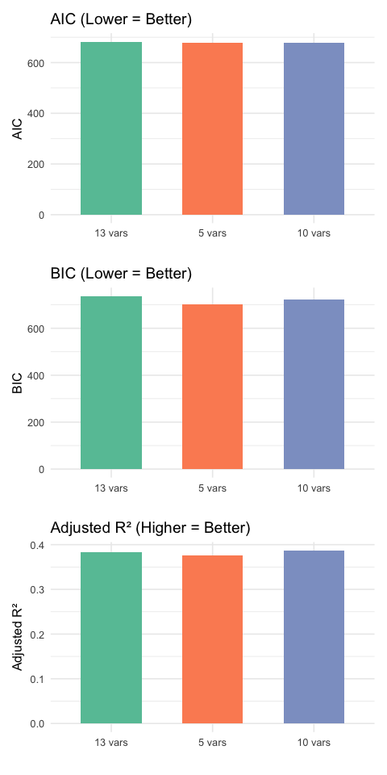
Cross-validation confirms the same conclusion reached by the BIC-based subset selection: the best model for predicting inflation (infl_mom) is a 5-variable model consisting of: infl_L1, oil_mom_L1, gdp_L8, ngas_L1, infl_yoy_L1.
Both methods independently identify the same model size and the same predictors, which strongly indicates that the relationship is robust, stable across folds, and not driven by overfitting.
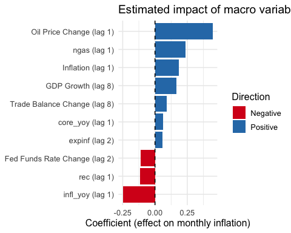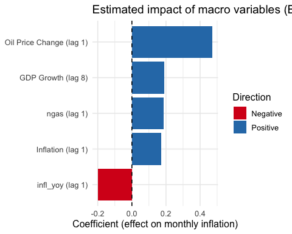
Oil Price Change (lag 1) – Positive effect. A 1-unit increase in oil prices leads to about a 0.48 percentage-point increase in monthly inflation.
GDP Growth (lag 8) – Positive effect. A 1-unit rise in GDP growth leads to about a 0.23 percentage-point increase in monthly inflation eight months later.
Natural Gas Price (lag 1) – Positive effect. A 1-unit increase in natural gas prices raises monthly inflation by about 0.20 percentage points.
Inflation (lag 1) – Positive effect. If last month’s inflation rises by 1 percentage point, this month’s inflation increases by about 0.17 percentage points.
Year-over-year Inflation (lag 1) – Negative effect. If annual inflation increases by 1 percentage point, monthly inflation decreases by about 0.18 percentage points, showing a stabilizing effect.
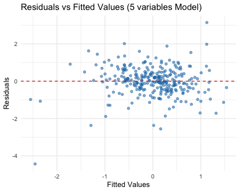
The linear regression model identifies clear structural drivers of inflation, with energy prices, GDP growth, and short-term inflation persistence showing the strongest effects. Residual diagnostics indicate that the model fits reasonably well, with residuals centered near zero and approximately normally distributed, though some variability remains unexplained.
The modeling aims to forecast the year-over-year inflation rate using SARIMAX models with various economic indicators as exogenous variables. The focus is on selecting the best model configuration through a systematic grid search, variable screening, combination, and rolling window validation to ensure robust forecasting performance.
The target variable is logarithmic year-over-year core CPI inflation, defined as:
\[log\_ inflation\_ yoy = 100 \times ln\left( {Core\_ CPI}_{t}/{Core\_ CPI}_{t - 12} \right)\]
The logarithmic form is preferred because it renders the growth rate time-additive, ensuring that the monthly change linearly sums to the annual change, a property that aligns directly with the linear differencing structure of SARIMAX models.
Augmented Dickey-Fuller Test
data: log_inflation_yoy
Dickey-Fuller = -3.0048, Lag order = 13, p-value = 0.153
alternative hypothesis: stationary
KPSS Test for Level Stationarity
data: log_inflation_yoy
KPSS Level = 1.7139, Truncation lag parameter = 19, p-value = 0.01The ADF test and KPSS test both suggest that the log year-over-year inflation series is likely non-stationary in levels.
Augmented Dickey-Fuller Test
data: d_log_inflation_yoy
Dickey-Fuller = -6.741, Lag order = 13, p-value = 0.01
alternative hypothesis: stationary
KPSS Test for Level Stationarity
data: d_log_inflation_yoy
KPSS Level = 0.032617, Truncation lag parameter = 19, p-value = 0.1The both tests suggest that the differenced log year-over-year inflation series is likely stationary.

Non-Seasonal Orders The PACF decays after lag 1 (.42), lag 2 (.181). That suggests p = 1 or 2 for an AR component. The ACF decays after lag 1 (.42) lag 2 (.325), and lag 3 (.121), suggesting q = 2 or 3 for an MA component.
Seasonal Orders The ACF has a negative peak at lag 12 (-.367), and the PACF has a negative peak at lag 12 (-.433), a smaller one at lag 24 (-.237) and lag 36 (-.215), indicating a medium or weak seasonal pattern. This suggests P = 1 or 2 for a seasonal AR component, and Q = 1 or 2 for a seasonal MA component, with s = 12. Because seasonal lags (12, 24, 36) decay quickly in ACF, we choose D = 0.
Thus, the potential SARIMA orders are: p <= 1, d = 1, q <= 3, P <= 2, D = 0, Q <= 2, s = 12.
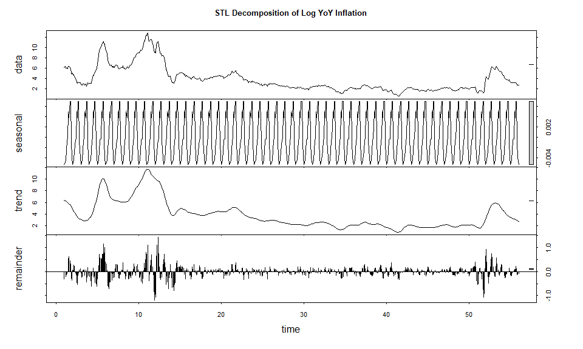
The STL decomposition reveals that the log year-over-year inflation is dominated by a long-term trend and exhibits minimal seasonality. The trend smooths the long-term movement, confirming persistent structural changes. The seasonal component, although repeating every 12 months, displays a very narrow amplitude (around ±0.006), indicating that seasonality contributes negligibly. Meanwhile, the remainder component shows volatility clustering in specific periods, which are connected to Oil Crisis, Energy Shock, and COVID-19, but otherwise oscillates around zero.
The high volatility clustering and large swings in log year-over-year inflation suggest potential structural breaks or regime shifts over the sample period.
Chow test
data: x_ts ~ 1
F = 388.17, p-value < 2.2e-16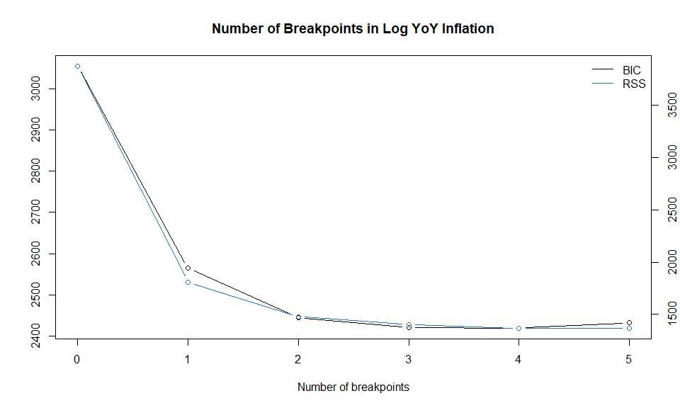
The Chow Test result F = 6.6481, p-value = 2.2e-16 strongly suggests the presence of structural breaks. The break-point analysis gets the lowest BIC (2426) occurs at m = 4, indicating four structural breaks.
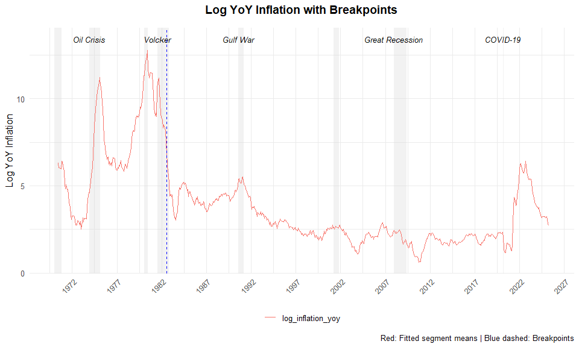
The largest structrural break occurs around early 1980s, coinciding with the Volcker disinflation period. Since ARIMA models assume the same variance and mean over time, we cut out the data before the break (1984-01-01) to simplify modeling.
Advanced models (like Markov-Switching AR) allow parameters to change over time. This would let us keep the old data, but it is much more complex to implement than ARIMA and is not involved in the study.
The X variables considered are:
| Variable Name | Description | Need Differencing? |
expected_inflation_1y |
Expected average inflation over the next 12 months. | Yes |
unemp_gap |
Unemployment gap. | Yes |
trade_balance_singed_log
|
Trade Balance Symmetric Logarithm | Yes |
RealGDPGrowth |
Real GDP growth rate. | No |
spread_10y_3m |
Yield spread between 10-year and 3-month Treasury securities. | No |
gasoline |
Gasoline prices. | Yes |
fed_funds_rate |
Effective Federal Funds Rate. | Yes |
Stationary tests (ADF and KPSS) suggest that five of the variables need differencing to achieve stationarity, while two (Real GDP Growth and Yield Spread) are already stationary in levels.
=== Stationarity Test Criteria ===
ADF Test (Null: Non-stationary): p-value < 0.05 → Stationary
KPSS Test (Null: Stationary): p-value > 0.05 → Stationary
==================================
Testing: expected_inflation_1y
Result: expected_inflation_1y is non-stationary
ADF p-value = 0.1235 (Non-stationary)
KPSS p-value = 0.01 (Non-stationary)
Testing: d_expected_inflation_1y
Result: d_expected_inflation_1y is stationary
ADF p-value = 0.01 (Stationary)
KPSS p-value = 0.1 (Stationary)
Testing: unemp_gap
Result: unemp_gap is stationary
ADF p-value = 0.0294 (Stationary)
KPSS p-value = 0.1 (Stationary)
Testing: d_unemp_gap
Result: d_unemp_gap is stationary
ADF p-value = 0.01 (Stationary)
KPSS p-value = 0.1 (Stationary)
Testing: TB_signed_log
Result: TB_signed_log is inconclusive (conflicting results)
ADF p-value = 0.018 (Stationary)
KPSS p-value = 0.01 (Non-stationary)
Testing: d_TB_signed_log
Result: d_TB_signed_log is stationary
ADF p-value = 0.01 (Stationary)
KPSS p-value = 0.1 (Stationary)
Testing: RealGDPGrowth
Result: RealGDPGrowth is stationary
ADF p-value = 0.01 (Stationary)
KPSS p-value = 0.1 (Stationary)
Testing: d_RealGDPGrowth
Result: d_RealGDPGrowth is stationary
ADF p-value = 0.01 (Stationary)
KPSS p-value = 0.1 (Stationary)
Testing: spread_10y_3m
Result: spread_10y_3m is stationary
ADF p-value = 0.01 (Stationary)
KPSS p-value = 0.1 (Stationary)
Testing: d_spread_10y_3m
Result: d_spread_10y_3m is stationary
ADF p-value = 0.01 (Stationary)
KPSS p-value = 0.1 (Stationary)
Testing: gasoline
Result: gasoline is non-stationary
ADF p-value = 0.1028 (Non-stationary)
KPSS p-value = 0.01 (Non-stationary)
Testing: d_gasoline
Result: d_gasoline is stationary
ADF p-value = 0.01 (Stationary)
KPSS p-value = 0.1 (Stationary)
Testing: fed_funds_rate
Result: fed_funds_rate is inconclusive (conflicting results)
ADF p-value = 0.0252 (Stationary)
KPSS p-value = 0.01 (Non-stationary)
Testing: d_fed_funds_rate
Result: d_fed_funds_rate is stationary
ADF p-value = 0.01 (Stationary)
KPSS p-value = 0.1 (Stationary) \[\text{MASE} = \frac{\frac{1}{h}\sum_{t = 1}^{h}\left| Y_{t} - {\widehat{Y}}_{t} \right|}{\frac{1}{n - 1}\sum_{i = 2}^{n}\left| Y_{i} - Y_{i - 1} \right|}\]
Where:
\(Y_{t}\): Actual value in the test set.
\({\widehat{Y}}_{t}\): Forecasted value in the test set.
\(h\): Number of steps in the forecast horizon (test set size).
\(n\): Number of observations in the training set.
\(Y_{i} - Y_{i - 1}\): The error of a naive forecast.
We implemented a custom calculation for the Mean Absolute Scaled Error
(MASE). The standard accuracy(``) implementation in the R
forecast package detects the seasonal frequency (12) of the
data and defaults to a seasonal naive benchmark. We
determined this to be unsuitable in this context because the STL
decomposition reveals a very weak seasonal effect. Consequently, we
computed MASE manually using the in-sample mean absolute error of a
simple random walk (Lag-1) as the denominator.
\[U = \sqrt{\frac{\sum_{t = 1}^{h}\left( Y_{t} - {\widehat{Y}}_{t} \right)^{2}}{\sum_{t = 1}^{h}\left( Y_{t} - Y_{t - 1} \right)^{2}}}\]
The model selection process follows these criteria for an academic setting:
Statistical Validity: Models must pass the Ljung-Box test for residual autocorrelation (p-value > 0.05) to ensure that residuals behave like white noise.
ARIMA Parameter Validity: All autoregressive (AR) and moving average (MA) coefficients must be statistically significant (p-value < 0.05). Additionally, all parameter estimates must have valid standard errors (no NA values) to ensure mathematically stablility.
Exogenous Coefficient Significance: All exogenous variable coefficients must be statistically significant (p-value < 0.05) to ensure that included predictors contribute meaningfully to the model.
Primary Ranking: Among statistically valid models, the optimal model is selected based on the lowest Mean Absolute Scaled Error (MASE) on the validation/test set.
Benchmark Superiority: Candidate models must achieve a Theil’s U < 1, confirming they outperform the naive random walk benchmark.
Model Parsimony: Among models that meet the above criteria, preference is given to those with fewer parameters to avoid overfitting and enhance interpretability.
We employed an expanding window cross-validation approach. All training windows are anchored at the series start date (1984-01-01). The initial training window extends to 2010-01-01, comprising 27 years (324 months) of data, while the final window extends to 2018-12-01. This results in a total of 108 validation folds.
For each iteration, the model is trained on the current window to generate a 12-step-ahead forecast. Test MASE and Theil’s U are computed for each forecast horizon and then averaged across all 108 folds to derive the overall performance metrics.
Total Model Specifications to Evaluate: 8746920 , populated via (p * q * P * Q) * choose( 7 x candidates * max lags, max 3 legs to combine)The model selection process employs a forward stepwise selection strategy combined with rolling window validation to systematically evaluate a vast array of SARIMAX model specifications.
We established a baseline for the univariate analysis by performing a grid search for optimal SARIMA\((p,d,q)(P,D,Q)\) parameters. To ensure statistical validity, we excluded any models that failed the Ljung-Box test, exhibited invalid (NA) standard errors, or contained statistically insignificant coefficients (\(p > 0.10\)). The remaining candidates were then ranked based on the Mean Absolute Scaled Error (MASE) derived from the rolling window validation, with the top-performing models advancing to the multivariate phase.
To mitigate the high computational cost of a full rolling validation at this preliminary stage, we employed a strided validation strategy with a step size of 11 months. Since 11 is coprime to the seasonal period (12), this interval ensures that the validation origins rotate through calendar months, preventing seasonal bias, while significantly reducing the computational burden.
We develop a function grid_search_sarimax_3``() that performs
a grid search over specified SARIMA orders and exogenous variable
configurations, utilizing rolling window validation with a defined step
size.
| model_name | Test_MASE | Theil_U | Ljung_Box | Largest_No_Xreg_p_value |
|---|---|---|---|---|
| SARIMA(1,1,1)(0,1,2)[12] | 2.204 | 0.968 | 0.614 | 0.000 |
| SARIMA(1,1,1)(0,0,2)[12] | 2.232 | 1.057 | 0.321 | 0.016 |
| SARIMA(1,1,1)(1,0,1)[12] | 2.256 | 1.074 | 0.313 | 0.017 |
| SARIMA(2,1,2)(1,0,2)[12] | 2.267 | 1.014 | 0.356 | 0.001 |
| SARIMA(1,1,1)(0,0,1)[12] | 2.286 | 1.012 | 0.364 | 0.000 |
| SARIMA(2,1,2)(1,0,1)[12] | 2.369 | 1.164 | 0.295 | 0.006 |
We conducted a bivariate screening for each exogenous candidate across all successful baseline specifications. Each lag of every exogenous variable (\(X_{t - k},k = 0..12\)) was individually tested against the baseline residuals. We retained only those variable-lag pairs that demonstrated statistical significance (\(p < 0.1\)). Subsequently, these candidates were incorporated into the baseline model to verify their significance within the full training and validation datasets.Validated variable-lag pairs were then compiled into a master list for each baseline model to inform subsequent multivariate specification searches. To constrain the search space, we retained only the top two most significant lags per variable-baseline specification.
In total, 24 variable-lag pairs across 9 baseline Specifications pass the screening. Here are three examples.| baseline_model | variable | lag | p_value | coefficient |
|---|---|---|---|---|
| SARIMA(1,1,1)(0,0,1)[12] | d_fed_funds_rate | 0 | 0.014 | 0.019 |
| SARIMA(1,1,1)(0,0,1)[12] | d_fed_funds_rate | 3 | 0.042 | 0.016 |
| SARIMA(1,1,1)(0,0,2)[12] | d_fed_funds_rate | 0 | 0.004 | 0.019 |
We performed a multivariate expansion by incorporating the significant variable-lag pairs identified during the screening phase. To control for complexity, we limited each specification to a maximum of three exogenous terms. We evaluated each combination for coefficient significance (\(p < 0.1\)). Specifications that passed this test underwent rolling window validation (step size = 11) to benchmark forecasting performance against the baseline. Only the specifications which pass all criteria are kept. Finally, the competing models were ranked by MASE, and the top five are moved to the final validation phase.
| Model Name | Test MASE | Theil U | Ljung-Box p-val | Largest X Reg p-value | Largest Non-Reg p-value |
|---|---|---|---|---|---|
| SARIMA(1,1,1)(1,0,2)[12]+d_unemp_gap_l11 | 1.436 | 0.815 | 0.476 | 0.079 | 0.000 |
| SARIMA(1,1,1)(1,0,2)[12]+d_unemp_gap_l11+spread_10y_3m_l0 | 1.635 | 1.010 | 0.467 | 0.075 | 0.000 |
| SARIMA(1,1,1)(0,0,2)[12]+d_fed_funds_rate_l3 | 1.808 | 0.785 | 0.292 | 0.021 | 0.009 |
| SARIMA(1,1,1)(1,0,1)[12]+d_fed_funds_rate_l3 | 1.851 | 0.798 | 0.262 | 0.028 | 0.011 |
| SARIMA(1,1,1)(1,0,2)[12]+d_fed_funds_rate_l3+spread_10y_3m_l0 | 1.901 | 0.921 | 0.333 | 0.027 | 0.000 |
We perform a full rolling windows validation on the final candidates, followed by a manual selection of the optimal model.
| Model Name | Test MASE | Theil U | Test MASE SD | Ljung-Box p-val | Largest X Reg p-value |
|---|---|---|---|---|---|
| SARIMA(1,1,1)(1,0,2)[12]+d_unemp_gap_l11 | 1.873 | 0.997 | 1.368 | 0.476 | 0.079 |
| SARIMA(1,1,1)(0,0,2)[12]+d_fed_funds_rate_l3 | 1.935 | 0.982 | 1.304 | 0.292 | 0.021 |
| SARIMA(1,1,1)(1,0,1)[12]+d_fed_funds_rate_l3 | 1.955 | 0.980 | 1.328 | 0.262 | 0.028 |
| SARIMA(1,1,1)(1,0,2)[12]+d_unemp_gap_l11+spread_10y_3m_l0 | 1.975 | 1.127 | 1.379 | 0.467 | 0.075 |
| SARIMA(1,1,1)(1,0,2)[12]+d_fed_funds_rate_l3+spread_10y_3m_l0 | 2.036 | 1.112 | 1.372 | 0.333 | 0.027 |
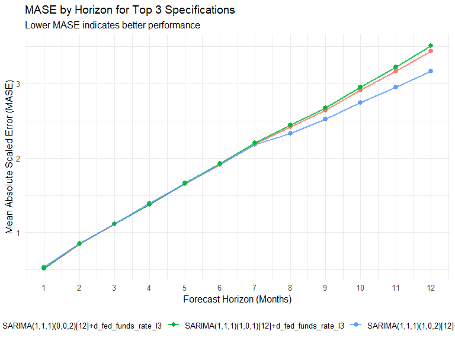
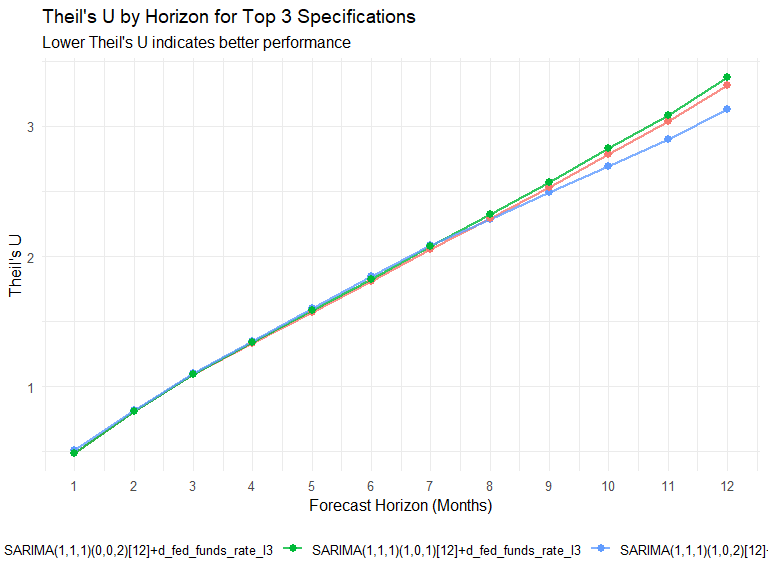
The top three specifications from the rolling validation exhibited comparable Test MASE scores up to the seventh forecast horizon, after which they began to diverge. However, since the Theil’s U statistic for even the best model exceeded 1.0 beyond the 3rd horizon, performance differences after the seventh horizon are inconsequential.
Although the top-ranked model, SARIMA(1,1,1)(1,0,2)[12]+d_unemp_gap_l11, minimized the error, its exogenous regressor was only marginally significant (\(p = 0.079\)). Consequently, we selected the second-best model, SARIMA(1,1,1)(0,0,2)[12]+d_fed_funds_rate_l3, which all coefficients are significant, as the final specification for diagnostics and forecasting.
The winner is SARIMA(1,1,1)(0,0,2)[12] augmented with d_fed_funds_rate at lag 3.
--- Model Summary ---
Series: ts(model_data$y, frequency = frequency)
Regression with ARIMA(1,1,1)(0,0,2)[12] errors
Coefficients:
ar1 ma1 sma1 sma2 d_fed_funds_rate_l3
0.9991 -0.8701 -1.1470 0.1479 0.0154
s.e. 0.0035 0.0227 0.0941 0.0568 0.0067
sigma^2 = 0.007258: log likelihood = 427.65
AIC=-843.31 AICc=-843.11 BIC=-818.95
Training set error measures:
ME RMSE MAE MPE MAPE MASE
Training set -0.005416098 0.0845948 0.06578378 -0.2182392 2.720714 0.1513679
ACF1
Training set -0.02255177
z test of coefficients:
Estimate Std. Error z value Pr(>|z|)
ar1 0.9990817 0.0034847 286.7088 < 2.2e-16 ***
ma1 -0.8700675 0.0226644 -38.3892 < 2.2e-16 ***
sma1 -1.1469594 0.0941232 -12.1857 < 2.2e-16 ***
sma2 0.1479033 0.0568454 2.6019 0.009272 **
d_fed_funds_rate_l3 0.0154304 0.0066674 2.3143 0.020651 *
---
Signif. codes: 0 '***' 0.001 '**' 0.01 '*' 0.05 '.' 0.1 ' ' 1All coefficients are statistically significant at the 5% level. The AR(1) coefficient is .999 (p < .001), indicating very strong persistence in the differenced series.
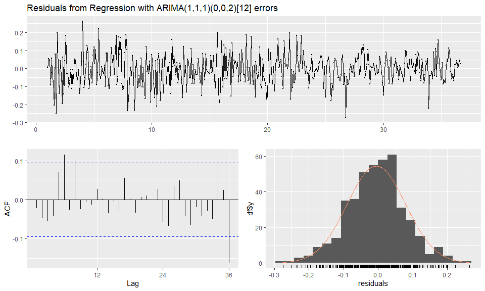
Ljung-Box test
data: Residuals from Regression with ARIMA(1,1,1)(0,0,2)[12] errors
Q* = 21.837, df = 20, p-value = 0.3494
Model df: 4. Total lags used: 24There are minor spikes around lag 6 and 8 that touch the significance threshold. Also, there is a noticeable negative spike at Lag 36. However, the Ljung-Box Test returns a p-value of 0.3494 (\(Q^{*} = 21.837\), \(df = 20\)), confirming that the residuals are independently distributed (white noise) and the model does not suffer from significant lack of fit.
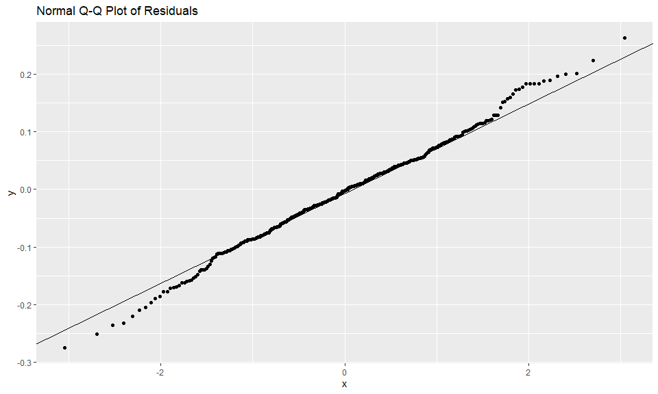
Both the histogram of residuals and the Normal Q-Q Plot confirm that the residuals follow an approximate normal distribution, with some deviation when examining the extreme tails.
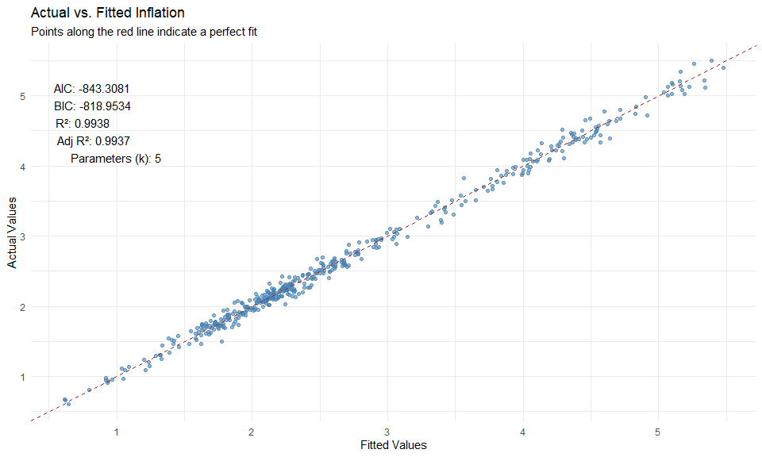
The robust in-sample fit (Adj R² = 0.99) indicates that the model explains a substantial portion of the variance in inflation based on one-step-ahead fitted values.
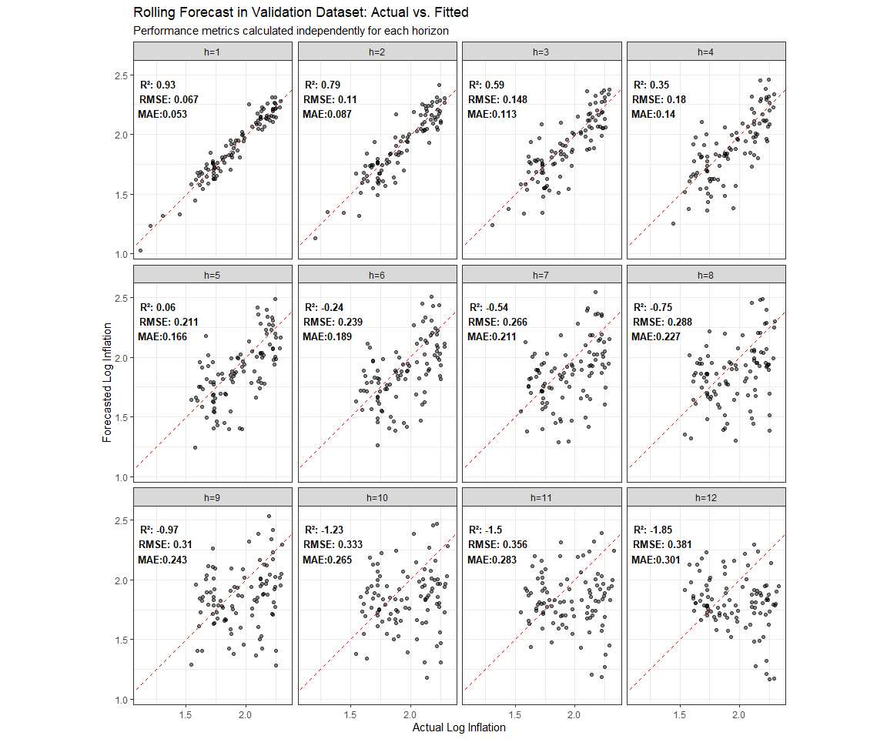
The forecast performance is degraded when horizon increases. The 1st horizon is near perfect; the 2nd and 3rd is good; from the 4th, the performance deteriorates rapidly from the fourth horizon onward.
This degradation is driven by error propagation, where deviations from previous steps are carried forward and compounded. This behavior is primarily attributable to the highly persistent AR(1) component (\(0.999\)), which causes shocks to have a permanent effect on the forecast trajectory. Additionally, the corrective power of the MA(1) component (\(- 0.887\)) is limited to the first horizon. Beyond \(h = 1\), the model lacks the observed target values necessary to calculate true residuals, causing the moving average term to effectively vanish.
Therefore, while the model fits the data mathematically, its ability to anticipate turning points is limited by this persistence.
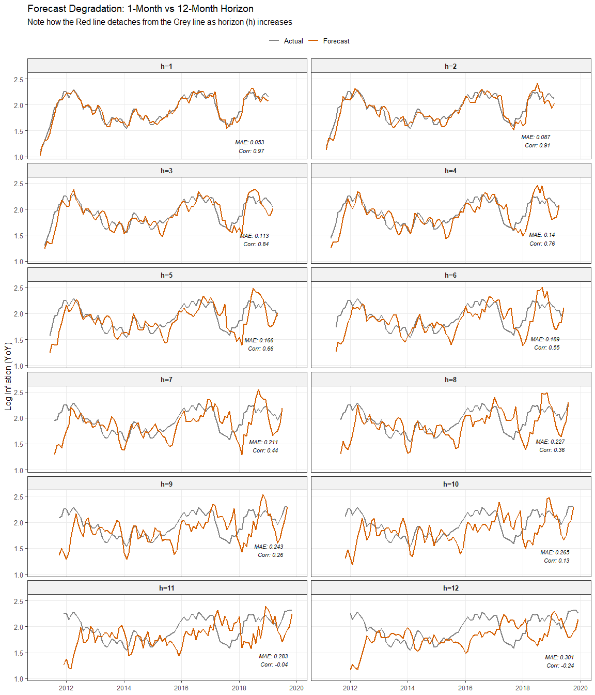
The plot confirms that error propagation intensifies as the horizon increases, resulting in a phase shift at higher horizons. Specifically, at \(h = 12\), the forecast trajectory appears to simply replicate the historical data with a delay.
The statistically significant SMA(1) coefficient (-1.15) contributes to the observed phase shift by reinforcing the replication of past seasonal dynamics in the forecast trajectory.
[1] "Running Test Rolling Forecast from 2020-01-01 to 2025-08-01"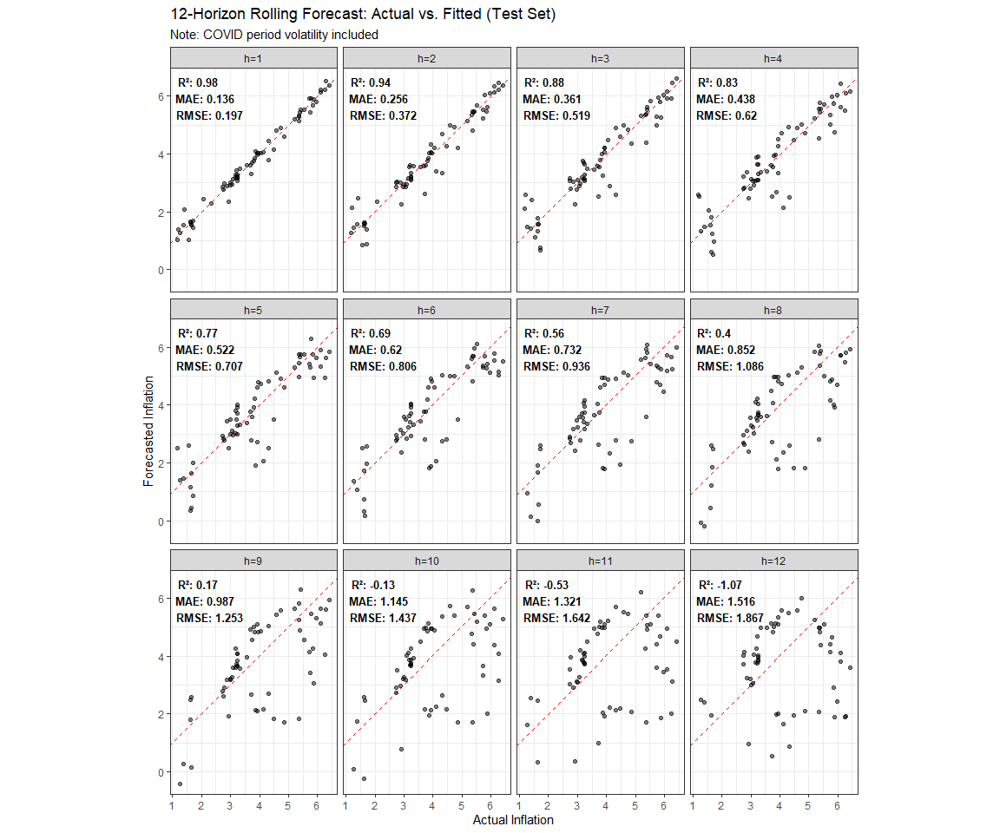
The plot confirms accuracy decay over increasing horizons, and error propagation is evident.
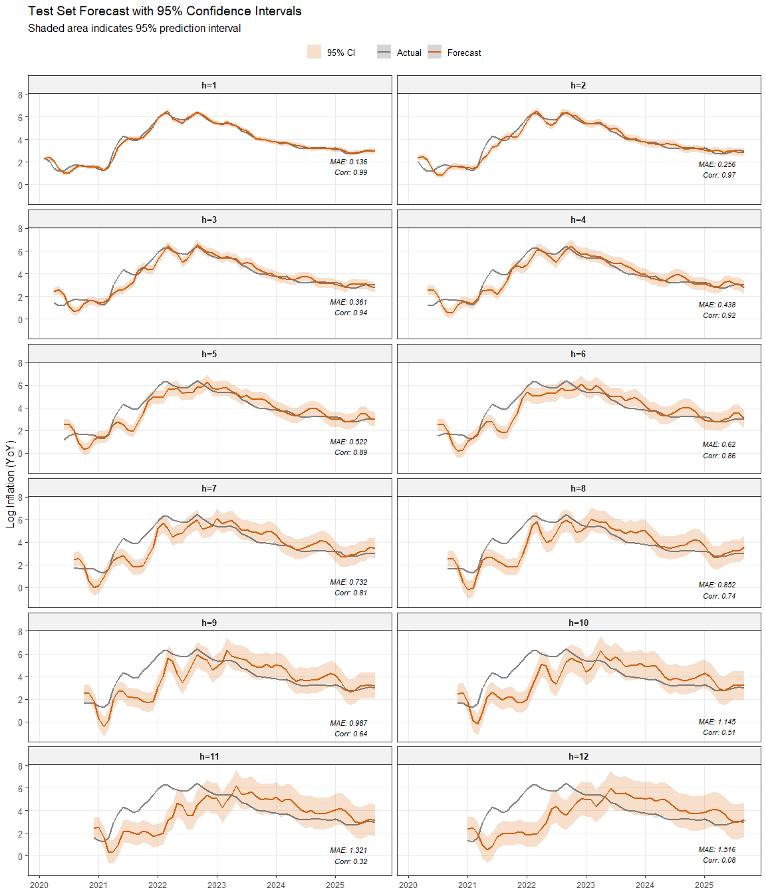
The error propagation and phase shift pattern is consistent with the validation set results. However, the overall accuracy is noticeably worse across all horizons. A significant portion of the forecast error is attributable to the extreme volatility observed during the 2021–2022 period, where the model struggled to capture the rapid acceleration of inflation.
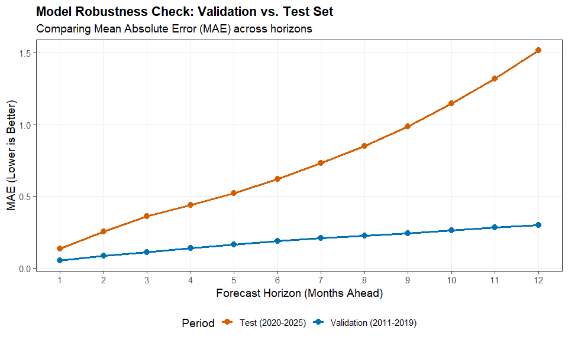
The widening gap between the two curves highlights a significant degradation in model performance, likely attributable to the structural regime shift between the pre-COVID and post-COVID economic environments.
Both two lines are near linear, indicating the forecast error accumulates linearly,leading to significantly wider confidence intervals at the 12-month horizon compared to the 1-month horizon.
To enable forecasting for the future, we assume three scenarios:
The Fed fund rate keeps unchanged in the future.
It gets a cut of 2% in the next month, then stays unchanged.
It gets a hike of 2% in the next month, then stays unchanged.
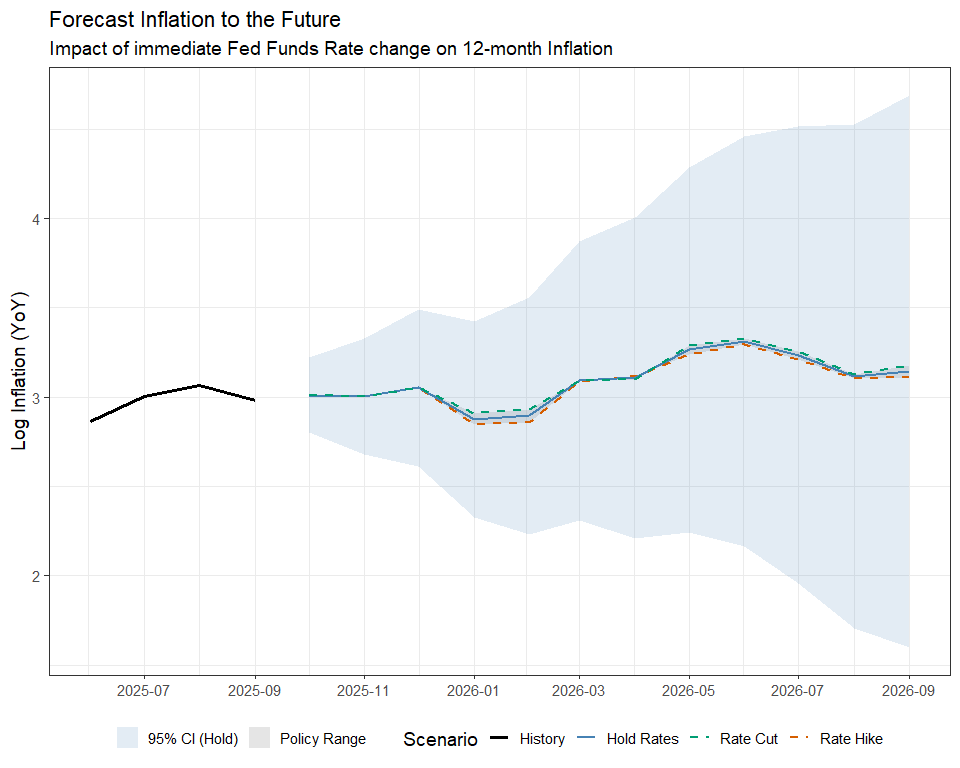
The three lines converges during the first three months, reflecting the three-month lag of the fed funds rate impact on inflation.
At month four, the higher the fed funds rate, the lower the inflation, which is consistent with economic theory.
Inflation converges again after month six. This occurs because the fed funds rate shocks are one-time pulses, and their effects dissipate over time due to the lag structure.
The confidence levels (shaded area) around the “Hold Rates” scenario indicate the uncertainty of the forecast, that widening over time.
In modern macroeconomic analysis, understanding how monetary policy (such as the federal funds rate), inflation, unemployment, and external supply shocks (e.g., oil prices) interact with each other is essential. This project uses a Vector Autoregression (VAR) model to build a multivariate time-series framework that can quantify and predict the dynamic relationships among key economic indicators. Specifically, we focus on the federal funds rate, unemployment rate, inflation rate, Brent crude oil price, and real wages.
The main objectives of this study are:
To identify statistically significant predictive relationships using Granger causality tests.
To analyze how shocks—such as interest-rate hikes or sudden oil-price changes—move through the system using Impulse Response Functions (IRF).
To validate the model’s robustness and accuracy through Out-of-Sample Forecast Evaluation (2020-2025).
Raw economic data often comes in different scales and trends. To prepare the data for the VAR model, we applied transformations to ensure “stationarity”. We took the first difference for the Fed Funds Rate, Unemployment Rate, and Inflation Rate. For Real Wages and Oil Prices, we used log-differences.
| date | d_Fed_Rate | d_Oil_Pct | d_Inflation | d_Unemployment | d_Real_Wage |
|---|---|---|---|---|---|
| 1990-02-01 | 0.01 | -0.0633 | -0.5580 | -0.1 | 0.0004 |
| 1990-03-01 | 0.04 | -0.0648 | 0.0766 | -0.1 | -0.0020 |
| 1990-04-01 | -0.02 | -0.0871 | -0.2355 | 0.2 | -0.0027 |
| 1990-05-01 | -0.08 | -0.0151 | -0.0781 | 0.0 | 0.0010 |
| 1990-06-01 | 0.11 | -0.0695 | 0.4645 | -0.2 | -0.0013 |
| 1990-07-01 | -0.14 | 0.1160 | -0.1578 | 0.3 | -0.0032 |
##
## --- Data Dimensions ---
## Observations: 425
## Variables: 6We used the Augmented Dickey-Fuller (ADF) test to check for unit roots. The tests returned P-values less than 0.05 for all variables, confirming stationarity.
## --- Augmented Dickey-Fuller Test Results ---
## Warning in adf.test(series, alternative = "stationary"): p-value smaller than
## printed p-value
## Variable: Oil % Chg | P-value: 0.0100 | Result: Stationary (Reject H0) ✅
## Warning in adf.test(series, alternative = "stationary"): p-value smaller than
## printed p-value
## Variable: Delta Unemp | P-value: 0.0100 | Result: Stationary (Reject H0) ✅
## Warning in adf.test(series, alternative = "stationary"): p-value smaller than
## printed p-value
## Variable: Delta Inflation | P-value: 0.0100 | Result: Stationary (Reject H0) ✅
## Warning in adf.test(series, alternative = "stationary"): p-value smaller than
## printed p-value
## Variable: Delta Real Wage | P-value: 0.0100 | Result: Stationary (Reject H0) ✅
## Warning in adf.test(series, alternative = "stationary"): p-value smaller than
## printed p-value
## Variable: Delta Fed Rate | P-value: 0.0100 | Result: Stationary (Reject H0) ✅Requirement: The model is fitted on the Train + Validation data (Historical data up to Jan 1, 2020). The period from 2020 to 2025 is reserved strictly for testing.
## Training Set End Date: 2019-12-01
## AIC suggested lag: 5
## Selected lag order p = 13
##
## --- Model Fit Statistics ---| Equation | Adj_R2 | AIC_System | BIC_System | |
|---|---|---|---|---|
| d_Fed_Rate | d_Fed_Rate | 0.4456 | -5175.747 | -3906.422 |
| d_Oil_Pct | d_Oil_Pct | 0.0977 | -5175.747 | -3906.422 |
| d_Inflation | d_Inflation | 0.4532 | -5175.747 | -3906.422 |
| d_Unemployment | d_Unemployment | 0.2119 | -5175.747 | -3906.422 |
| d_Real_Wage | d_Real_Wage | 0.2343 | -5175.747 | -3906.422 |
##
## PASS: All roots are inside the unit circle. System is stable. ✅Using the model trained on pre-2020 data, we analyze the predictive relationships.
| Hypothesis | P_Value | Significant |
|---|---|---|
| Fed Rate predicts others | 0.0370 | TRUE |
| Unemployment predicts others | 0.1191 | FALSE |
| Inflation predicts others | 0.0238 | TRUE |
| Oil Price predicts others | 0.0000 | TRUE |
| Real Wage predicts others | 0.0950 | FALSE |
Impulse Response Functions (IRF) visualize how shocks ripple through the economy based on the structural relationships learned from the training period.
## Warning: Using `size` aesthetic for lines was deprecated in ggplot2 3.4.0.
## ℹ Please use `linewidth` instead.
## This warning is displayed once every 8 hours.
## Call `lifecycle::last_lifecycle_warnings()` to see where this warning was
## generated.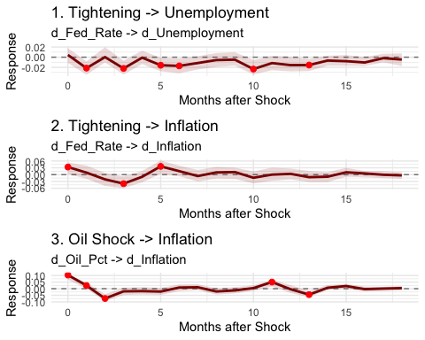
To rigorously test the model, we perform a Rolling Walk-Forward Validation on the test set (2020-2025).
We start at Jan 2020, forecast 12 months ahead, and compare to actuals.
We then move forward one month, refit (or re-predict), and forecast again.
We aggregate the errors by Forecast Horizon (1 to 12 months).
## Running Walk-Forward Validation from 2020-01-01 to end of data...
##
## --- Forecast Accuracy by Horizon (2020-2025) ---| Horizon | Variable | MAE | RMSE |
|---|---|---|---|
| 1 | d_Fed_Rate | 0.2405 | 0.3907 |
| 2 | d_Fed_Rate | 0.3028 | 0.4858 |
| 3 | d_Fed_Rate | 0.2860 | 0.5000 |
| 4 | d_Fed_Rate | 0.2877 | 0.5306 |
| 5 | d_Fed_Rate | 0.2842 | 0.6105 |
| 6 | d_Fed_Rate | 0.2973 | 0.6875 |
| 7 | d_Fed_Rate | 0.3051 | 0.8401 |
| 8 | d_Fed_Rate | 0.3267 | 1.0809 |
| 9 | d_Fed_Rate | 0.3585 | 1.2926 |
| 10 | d_Fed_Rate | 0.4371 | 1.6366 |
| 11 | d_Fed_Rate | 0.5083 | 1.9337 |
| 12 | d_Fed_Rate | 0.5422 | 2.2258 |
| 1 | d_Inflation | 0.3460 | 0.5022 |
| 2 | d_Inflation | 0.3833 | 0.5578 |
| 3 | d_Inflation | 0.4570 | 0.6753 |
| 4 | d_Inflation | 0.4020 | 0.6361 |
| 5 | d_Inflation | 0.3777 | 0.6104 |
| 6 | d_Inflation | 0.3447 | 0.5227 |
| 7 | d_Inflation | 0.3827 | 0.5775 |
| 8 | d_Inflation | 0.3701 | 0.6095 |
| 9 | d_Inflation | 0.4018 | 0.6407 |
| 10 | d_Inflation | 0.3828 | 0.6200 |
| 11 | d_Inflation | 0.3535 | 0.5944 |
| 12 | d_Inflation | 0.3653 | 0.5575 |
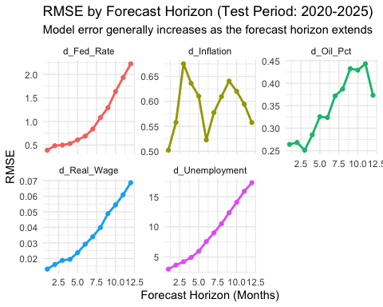
This study developed a five-variable VAR model validated on out-of-sample data from 2020 to 2025.
Fit: The model fit statistics (Adjusted \(R^{2}\), AIC, BIC) on the training set indicate reasonable explanatory power for monthly differenced data.
Dynamics: Impulse response analysis confirms significant delayed effects of monetary policy on unemployment and inflation.
Validation: The walk-forward analysis shows the error (RMSE) typically increasing with the forecast horizon, which is expected. This validation on the volatile 2020-2025 period demonstrates the model’s capabilities and limitations in handling structural breaks like the COVID-19 pandemic.
A recession is generally defined by the NBER as a significant decline in economic activity spread across the economy, lasting more than a few months. Beyond the technical definition, recessions have profound societal impacts: rising unemployment, reduced household income, and business failures.
Why Early Detection Matters:
For Policymakers: An early warning system allows central banks and governments to implement counter-cyclical measures (such as interest rate cuts or fiscal stimulus) before the damage becomes deep.
For Businesses: Companies can adjust inventory levels, manage cash flow, and freeze hiring in anticipation of lower demand.
For Households: Individuals can increase savings and reduce discretionary spending to prepare for potential income instability.
The goal of this project is to build a recession prediction model based on a Probit regression framework with a three-month forecast horizon. In addition to the classical yield spread, we incorporate real-economy indicators—such as GDP trend, labor market conditions (unemployment gap), and inflation and oil price dynamics—to construct a robust multivariate forecasting system.
We use U.S. economic data from 1990 to the present. Data from 1990–2018 are used for model training (in-sample), while data from 2018 onward serve as the out-of-sample test set.
Raw monthly economic data often contain substantial noise and are released with lags. To build a reliable forecasting model, we applied the following preprocessing steps:
Target Variable Construction: We define Target_Recession as whether an NBER recession occurs three months ahead (\(t + 3\)). Using information at time \(t\) to predict the state at \(t + 3\) ensures genuine forward-looking value.
Data Smoothing: Monthly economic indicators can fluctuate sharply. Key variables (yield spread, oil prices, GDP trend) are smoothed using a 3-month rolling mean.
Lag Adjustment: For GDP_Trend, we applied a lag to simulate real-world data availability (avoiding data leakage).
Yield Spread Momentum: We constructed Spread_Change (\(Spread_{t} - Spread_{t - 3}\)) to capture the velocity of yield curve deterioration.
We built four Probit models of increasing complexity. Based on the Akaike Information Criterion (AIC), the model specification including Spread, Spread_Change, GDP_Trend, Real_Fed_Rate, Unemp_Gap, and Oil_YoY achieved the lowest AIC and the best overall fit.
## ### Model Comparison Results
##
##
## Table: AIC Comparison
##
## |Model_Name | AIC_Value|
## |:--------------|---------:|
## |Simple Model | 182.5489|
## |Complex1 Model | 128.4967|
## |Complex2 Model | 124.7051|
## |Complex3 Model | 114.6570|
##
## ➡️ **Selected Model:** Complex3 ModelTo understand which variables contribute most to the prediction, we calculated the Average Marginal Effects (AME). The bar chart below visualizes the impact of a one-unit increase in each variable on the probability of a recession.
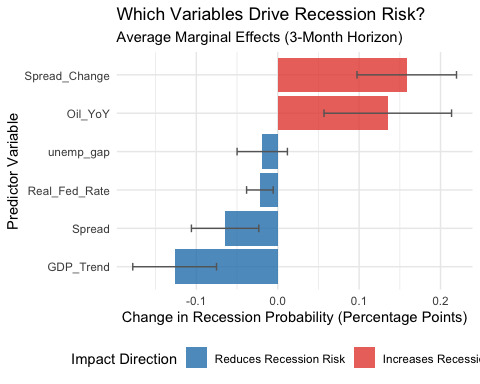
Analysis of Key Drivers:
Spread_Change (Momentum): As shown in the chart, Spread_Change is a strong positive predictor. This suggests that the velocity of yield curve flattening/inversion is often a more critical warning signal than the spread level itself.
GDP_Trend: A positive trend in Real GDP is the strongest protective factor (negative coefficient), significantly reducing recession probability.
Oil_YoY: Positive oil price shocks also contribute to increased recession risk.
We used Youden’s Index to identify an optimal threshold to balance Sensitivity and Specificity.
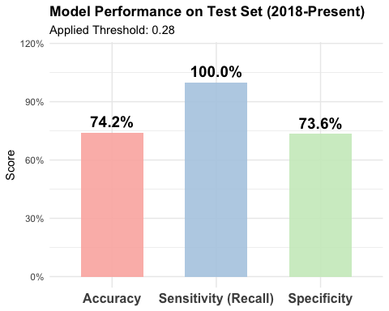
The final time-series visualization compares the model’s predicted recession probabilities with actual NBER recession periods.
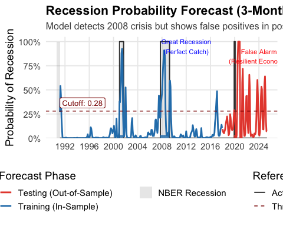
Although the model performs strongly across historical cycles, its elevated recession probabilities during 2023–2024 contrast sharply with the economy’s actual robustness. This discrepancy—labeled as a “False Alarm”—likely reflects structural shifts in the post-pandemic economy, suggesting that traditional transmission channels may have become “decoupled” or weakened.
Practical Value: Despite the recent “false alarm,” the model maintains high sensitivity in identifying historical downturns. For stakeholders, this implies that while the model may occasionally signal caution during “soft landings,” it effectively ensures that no genuine recession is missed. This “safety-first” characteristic makes it a valuable heuristic tool for risk management scenarios where missing a crisis (False Negative) is more costly than preparing for one that doesn’t happen.
The project began by attempting to explain inflation using the traditional Phillips curve, which historically linked unemployment to changes in inflation. However, this approach quickly failed to capture the modern dynamics of inflation as the economy has changed since the 1960s. We decided to add variables to the study that include global linkages, Treasury yields, GDP growth, energy prices, and monetary policy variables. To more fully assess and forecast inflation, we developed three complementary models, each chosen for a specific analytical purpose:
SARIMAX for Precision Forecasting: Utilized for its ability to capture short-term persistence. The model demonstrated that inflation is highly autoregressive, providing excellent short-turn (h < 4) forecasts, and effectively accounting for the weak but persistent seasonality in the data.
Linear regression for interpretation and structural identification. Served as the primary tool for feature selection and interpretability. Variable models quantify how oil, GDP growth, wages, and interest rates affect inflation. Useful for understanding structural relationships that models such as VAR and SARIMA can hide.
VAR for dynamic system modeling. Models the joint evolution of several economic variables. The model provides stable medium-term forecasts and captures the feedback loops between policy rates (e.g., oil shocks or rate hikes). We find that energy markets are the strongest predictors of inflation: a rise in oil or natural gas prices leads to a noticeable increase in monthly inflation, and stronger GDP growth raises inflation with an eight-month delay. Inflation also exhibits strong short-run persistence, while higher year-over-year inflation exerts a mild corrective force, helping stabilize monthly price changes.
Ultimately, this comparative analysis demonstrates that no single statistical framework suffices for a system as complex as the US macroeconomy. We observed a clear trade-off between model interpretability (Linear Regression), short-run forecasting (SARIMAX), and dynamic predictive power (VAR). While our models successfully captured the autoregressive nature of inflation and identified significant lag structures, they were constrained by the strict assumptions of linearity and the necessity of stationarity transformations, which filtered out long-term equilibrium signals. This project highlights that robust statistical analysis requires not just a single ‘best’ model, but a diverse ensemble of approaches, and points to the necessity of future non-linear methods, such as Markov Switching AR, Machine Learning and Structural VECM, to overcome the limitations of classical econometrics in the presence of structural breaks.
Despite the strengths of the models developed in this study, several limitations should be acknowledged. The U.S. economy has experienced substantial structural changes, particularly since the 1980s and during the COVID-19 period. Traditional time-series frameworks such as linear regression, SARIMAX, and VAR assume relatively stable relationships over time, an assumption that may be violated in the presence of regime shifts, policy changes, or supply-side disruptions. Although early data were omitted to reduce the impact of structural breaks from the 1970s and early 1980s, structural instability remains a concern and may distort estimated relationships.
Model performance is also affected by lag selection and differencing. Lags that lacked statistical significance were removed to avoid overfitting; however, this filtering may reduce predictive power when economic effects operate with long or variable delays. In the VAR framework, differencing the data further limits the analysis to short-run dynamics and leads to a loss of long-term equilibrium information.
Forecasting limitations are particularly evident over longer horizons. SARIMAX models tend to accumulate errors rapidly as the forecast horizon increases, with high persistence and weak seasonality causing forecasts to stagnate. VAR models, while capturing multivariate interactions, exhibit weaker dependence structures and higher residual variance, resulting in a less precise fit for the inflation equation compared to SARIMAX.
Finally, all models considered rely on linear assumptions, whereas real-world economic dynamics are often nonlinear. This simplification, combined with the unprecedented volatility and policy responses during the COVID-19 shock, may cause models to misinterpret temporary disruptions as structural features of the inflation process.
Markov-Switching Models: Use Markov-Switching VAR/AR to accommodate structural breaks, allowing for the analysis of the full historical time series.
Machine Learning Models: Implement Long Short-Term Memory (LSTM) networks or Random Forest Regression. These models naturally capture non-linear interactions and may outperform ARIMA in long-horizon forecasting.
Structural VECM: Develop a Structural VECM (SVECM) to analyze long-term equilibrium dynamics while simultaneously identifying structural inflationary shocks.
Explainable AI: Use Shapley Additive explanations (SHAP) to analyze the effect size and contribution of each predictor variable on the target.